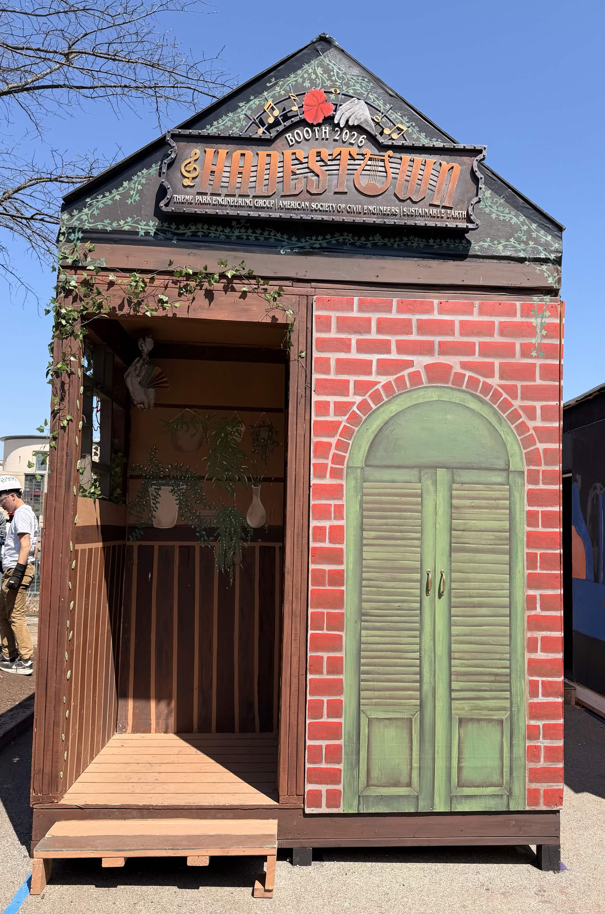
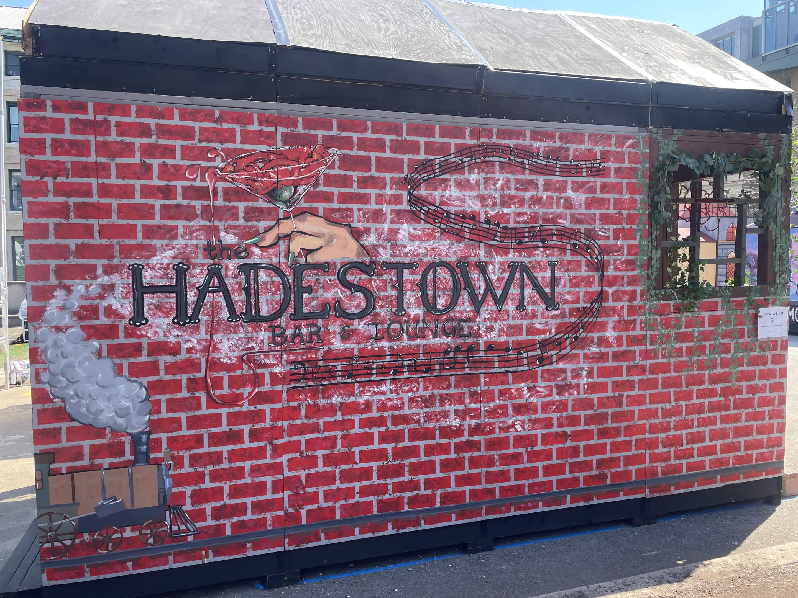
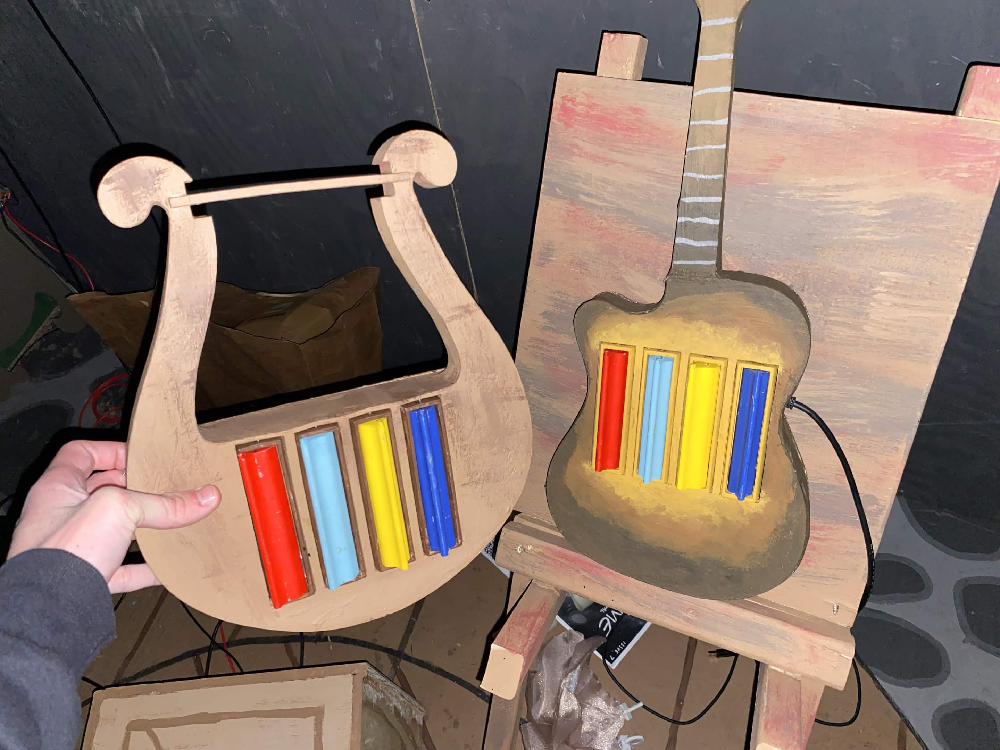

During the Spring 2026 semester, I worked with Carnegie Mellon's Theme Park
Engineering Group (TPEG), alongside Sustainable Earth and the American Society
of Civil Engineers, to design and build a Hadestown-themed Booth
for CMU Spring Carnival. Booth is a long-running competition in which student
organizations have just one week to construct an immersive
walk-through attraction around a common theme.
Our team created an interactive musical experience inspired by
Hadestown. Two guests worked together: one acted as a conductor,
creating musical sequences with a custom baton, while the other performed those
sequences on a custom-built lyre. Successful performances caused a garden of
animatronic flowers to bloom, eventually leading guests to one of two narrative
endings.



My Contributions
I served as both a software engineer and experience designer on the project,
helping shape the gameplay while implementing the software that controlled the
attraction.
Co-designed the two-player cooperative gameplay and progression through the experience.
Implemented the central gameplay controller, coordinating gameplay flow, scoring,
narrative progression, lighting, audio, and the flower animations.
Worked with teammates designing the custom controller, instrument,
electronics, lighting, and physical theming to create a cohesive guest
experience.
Helped build, paint, and theme the physical Booth during the week-long
construction period.
Design Challenges
Our original design tracked an infrared LED attached to a conductor's baton
using an IR camera, allowing one player to "conduct" a melody for their partner
to then perform on a custom lyre. During final integration, we discovered that our curtains were not
dark enough, so daylight inside the booth overwhelmed the IR tracking system.
Rather than removing the experience entirely, we quickly redesigned the game
into a lyre-only, operator-controlled version. Ride operators sent notes to the
flower wall for guests to play and manually commanded the flowers to open. Because
the core guest interaction remained intact, guests never realized they were
experiencing a fallback version of the attraction.
Outcome
Despite the technical challenges, the Booth proved to be a success. Over
the course of carnival weekend, hundreds of guests
enthusiastically participated in the game, marvelled at the art and design,
and enjoyted the physical effects which helped bring the world of Hadestown
to life.
Our Booth won first place in the Blitz division, the smallest
Booth category at Spring Carnival.
More importantly, the project reinforced an important lesson in themed
entertainment: a great guest experience does not have to be 100% automatic.
A low-tech solution, sometimes even relying on people-power, may be the
best way to go. And, often, guests will not even know the difference.